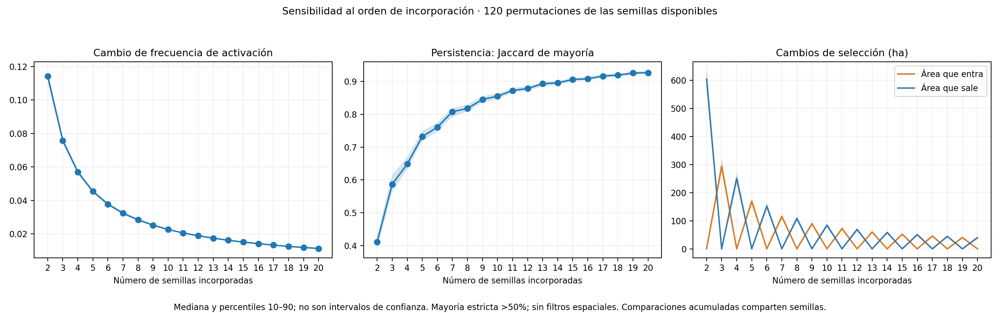

Se conserva la configuración y el presupuesto de 15 km² exteriores por corrida. No se aplican filtros espaciales.

Las bandas representan variación entre órdenes, no incertidumbre estadística. Una curva más plana no demuestra por sí sola estabilidad: los conjuntos acumulados comparten corridas. La mayoría estricta cambia discretamente entre números pares e impares.
Jaccard medio entre corridas: 0.259. Área activada en todas: 69.48 ha.
Resumen y limitaciones